Task 5: Day 2 operation using CI Pipeline
In this section, we will implement CI/CD pipeline for day 2 operation tasks.
- Create playbook to verify underlay and overlay
- Version control the EVPN ansible playbooks using GitLab
- Create CI pipeline using GitLab
- Add new VNIs into existing fabric
- Verify CI pipeline in test and staging stages
- Commit the merger and verify CI Pipeline in production stage
Step 1: Playbook to verify underlay and overlay
In this step, you will create the playbook to verify underlay and overlay operation. The playbook will be applied to all leaf switches to verify the below commands:
Underlay
- show ip ospf neighbor
- show ip bgp sum
- show ip pim neighbor
Overlay
- show nve vni
- show nve peer
- show ip route vrf Tenant-1
- show bgp l2vpn evpn
- show l2route evpn mac-ip all
- Switch to “Atom”, right click on the folder
EVPN-Ansibleand create a new playbook namedverify_fabric.yml. Enter this file name and hit enter.
---
- hosts: leaf, jinja2_leaf
connection: local
gather_facts: false
tasks:
- name: verify underlay
register: underlay_output
cisco.nxos.nxos_command:
commands:
- show ip ospf neighbors
- show ip bgp sum
- show ip pim neighbor
tags: underlay
- debug: var=underlay_output.stdout_lines
tags: underlay
- set_fact:
savefile: "{{underlay_output.stdout_lines | to_nice_yaml}}"
- local_action: copy content="{{savefile}}" dest=./underlay.txt
- name: Verify Overlay
register: overlay_output
cisco.nxos.nxos_command:
commands:
- show nve vni
- show nve peer
- show ip route vrf Tenant-1
- show bgp l2vpn evpn
- show l2route evpn mac-ip all
tags: overlay
- debug: var=overlay_output.stdout_lines
tags: overlay
- set_fact:
savefile: "{{overlay_output.stdout_lines | to_nice_yaml}}"
- local_action: copy content="{{savefile}}" dest=./overlay.txt
-
Click
FileandSave. This will save the playbook, and also ftp the playbook to Ansible server using pre-configured “remote-sync” package. -
On the Ansible node (via MTPutty), run verify_fabric.yml playbook and verify the output for underlay by executing below command (using respective tag):
root@ubuntu:~/EVPN-Ansible# ansible-playbook verify_fabric.yml --tags "underlay"
The output shows ospf, bgp and pim neighbors for all leaf switches
-
Below screenshot shows the partial output of above command:
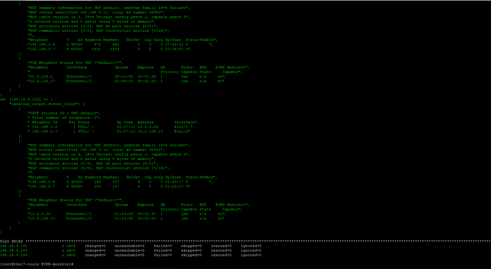
Here is a log of execution of above command:
root@ubuntu:~/EVPN-Ansible# ansible-playbook verify_fabric.yml --tags "underlay"
PLAY [leaf, jinja2_leaf] *********************************************************************************************************************************************************************************************
TASK [verify underlay] ***********************************************************************************************************************************************************************************************
ok: [198.18.4.101]
ok: [198.18.4.104]
ok: [198.18.4.103]
TASK [debug] *********************************************************************************************************************************************************************************************************
ok: [198.18.4.101] => {
"underlay_output.stdout_lines": [
[
"OSPF Process ID 1 VRF default",
" Total number of neighbors: 2",
" Neighbor ID Pri State Up Time Address Interface",
" 192.168.0.6 1 FULL/ - 01:27:12 10.0.0.21 Eth1/1 ",
" 192.168.0.7 1 FULL/ - 01:27:12 10.0.128.5 Eth1/2"
],
[
"BGP summary information for VRF default, address family IPv4 Unicast",
"BGP router identifier 192.168.0.8, local AS number 65000",
"BGP table version is 6, IPv4 Unicast config peers 2, capable peers 2",
"0 network entries and 0 paths using 0 bytes of memory",
"BGP attribute entries [0/0], BGP AS path entries [0/0]",
"BGP community entries [0/0], BGP clusterlist entries [4/16]",
"",
"Neighbor V AS MsgRcvd MsgSent TblVer InQ OutQ Up/Down State/PfxRcd",
"192.168.0.6 4 65000 161 106 6 0 0 01:23:17 0 ",
"192.168.0.7 4 65000 161 106 6 0 0 01:23:15 0"
],
[
"PIM Neighbor Status for VRF \"default\"",
"Neighbor Interface Uptime Expires DR Bidir- BFD ECMP Redirect",
" Priority Capable State Capable",
"10.0.0.21 Ethernet1/1 01:23:08 00:01:35 1 yes n/a no",
"10.0.128.5 Ethernet1/2 01:23:07 00:01:31 1 yes n/a no"
]
]
}
ok: [198.18.4.104] => {
"underlay_output.stdout_lines": [
[
"OSPF Process ID 1 VRF default",
" Total number of neighbors: 2",
" Neighbor ID Pri State Up Time Address Interface",
" 192.168.0.6 1 FULL/ - 1d04h 10.0.128.1 Eth1/1 ",
" 192.168.0.7 1 FULL/ - 1d04h 10.0.128.17 Eth1/2"
],
[
"BGP summary information for VRF default, address family IPv4 Unicast",
"BGP router identifier 192.168.0.11, local AS number 65000",
"BGP table version is 5, IPv4 Unicast config peers 2, capable peers 2",
"0 network entries and 0 paths using 0 bytes of memory",
"BGP attribute entries [0/0], BGP AS path entries [0/0]",
"BGP community entries [0/0], BGP clusterlist entries [4/16]",
"",
"Neighbor V AS MsgRcvd MsgSent TblVer InQ OutQ Up/Down State/PfxRcd",
"192.168.0.6 4 65000 672 662 5 0 0 07:03:12 0 ",
"192.168.0.7 4 65000 1441 1433 5 0 0 22:36:01 0"
],
[
"PIM Neighbor Status for VRF \"default\"",
"Neighbor Interface Uptime Expires DR Bidir- BFD ECMP Redirect",
" Priority Capable State Capable",
"10.0.128.1 Ethernet1/1 08:51:43 00:01:28 1 yes n/a no",
"10.0.128.17 Ethernet1/2 22:36:23 00:01:23 1 yes n/a no"
]
]
}
ok: [198.18.4.103] => {
"underlay_output.stdout_lines": [
[
"OSPF Process ID 1 VRF default",
" Total number of neighbors: 2",
" Neighbor ID Pri State Up Time Address Interface",
" 192.168.0.6 1 FULL/ - 01:27:11 10.0.0.29 Eth1/1 ",
" 192.168.0.7 1 FULL/ - 01:27:10 10.0.128.13 Eth1/2"
],
[
"BGP summary information for VRF default, address family IPv4 Unicast",
"BGP router identifier 192.168.0.10, local AS number 65000",
"BGP table version is 6, IPv4 Unicast config peers 2, capable peers 2",
"0 network entries and 0 paths using 0 bytes of memory",
"BGP attribute entries [0/0], BGP AS path entries [0/0]",
"BGP community entries [0/0], BGP clusterlist entries [4/16]",
"",
"Neighbor V AS MsgRcvd MsgSent TblVer InQ OutQ Up/Down State/PfxRcd",
"192.168.0.6 4 65000 148 107 6 0 0 01:23:17 0 ",
"192.168.0.7 4 65000 150 107 6 0 0 01:23:17 0"
],
[
"PIM Neighbor Status for VRF \"default\"",
"Neighbor Interface Uptime Expires DR Bidir- BFD ECMP Redirect",
" Priority Capable State Capable",
"10.0.0.29 Ethernet1/1 01:23:09 00:01:37 1 yes n/a no",
"10.0.128.13 Ethernet1/2 01:23:08 00:01:23 1 yes n/a no"
]
]
}
PLAY RECAP ***********************************************************************************************************************************************************************************************************
198.18.4.101 : ok=2 changed=0 unreachable=0 failed=0 skipped=0 rescued=0 ignored=0
198.18.4.103 : ok=2 changed=0 unreachable=0 failed=0 skipped=0 rescued=0 ignored=0
198.18.4.104 : ok=2 changed=0 unreachable=0 failed=0 skipped=0 rescued=0 ignored=0
Next:
- Run verify_fabric.yml playbook and verify the output for overlay using the respective tag in the command (as shown below):
root@ubuntu:~/EVPN-Ansible# ansible-playbook verify_fabric.yml --tags "overlay"
The output shows nve tunnel peer, host route in bgp EVPN from all leaf switches
-
Below screenshot of the partial output of above command:
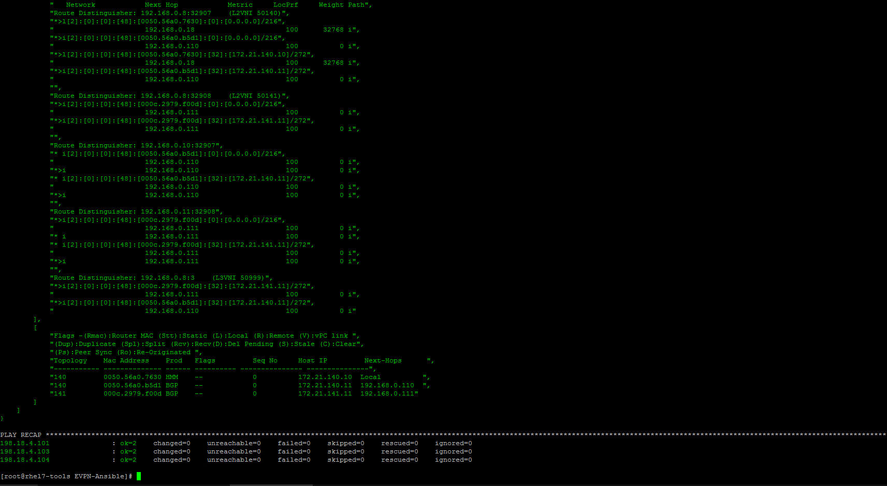
-
Below shows the complete log output of execution of above playbook command. Verify the output for vne vni status, vne dynamic neighbors, type host mac+ip evpn route update for each L2VNI, l2fib information.
root@ubuntu:~/EVPN-Ansible# ansible-playbook verify_fabric.yml --tags "overlay"
PLAY [leaf, jinja2_leaf] *********************************************************************************************************************************************************************************************
TASK [Verify Overlay] ************************************************************************************************************************************************************************************************
ok: [198.18.4.104]
ok: [198.18.4.103]
ok: [198.18.4.101]
TASK [debug] *********************************************************************************************************************************************************************************************************
ok: [198.18.4.104] => {
"overlay_output.stdout_lines": [
[
"Codes: CP - Control Plane DP - Data Plane ",
" UC - Unconfigured SA - Suppress ARP ",
" SU - Suppress Unknown Unicast",
" ",
"Interface VNI Multicast-group State Mode Type [BD/VRF] Flags",
"--------- -------- ----------------- ----- ---- ------------------ -----",
"nve1 50140 239.0.0.140 Up CP L2 [140] ",
"nve1 50141 239.0.0.141 Up CP L2 [141] ",
"nve1 50999 n/a Up CP L3 [Tenant-1]"
],
[
"Interface Peer-IP State LearnType Uptime Router-Mac ",
"--------- --------------- ----- --------- -------- -----------------",
"nve1 192.168.0.18 Up CP 01:07:55 000c.2997.621c ",
"nve1 192.168.0.110 Up CP 01:23:17 000c.2939.f53f"
],
[
"IP Route Table for VRF \"Tenant-1\"",
"'*' denotes best ucast next-hop",
"'**' denotes best mcast next-hop",
"'[x/y]' denotes [preference/metric]",
"'%<string>' in via output denotes VRF <string>",
"",
"172.21.140.0/24, ubest/mbest: 1/0, attached",
" *via 172.21.140.1, Vlan140, [0/0], 22:39:01, direct",
"172.21.140.1/32, ubest/mbest: 1/0, attached",
" *via 172.21.140.1, Vlan140, [0/0], 22:39:01, local",
"172.21.140.10/32, ubest/mbest: 1/0",
" *via 192.168.0.18%default, [200/0], 01:07:52, bgp-65000, internal, tag 65000 (evpn) segid: 50999 tunnelid: 0xc0a80012 encap: VXLAN",
" ",
"172.21.140.11/32, ubest/mbest: 1/0",
" *via 192.168.0.110%default, [200/0], 01:23:18, bgp-65000, internal, tag 65000 (evpn) segid: 50999 tunnelid: 0xc0a8006e encap: VXLAN",
" ",
"172.21.141.0/24, ubest/mbest: 1/0, attached",
" *via 172.21.141.1, Vlan141, [0/0], 22:38:59, direct",
"172.21.141.1/32, ubest/mbest: 1/0, attached",
" *via 172.21.141.1, Vlan141, [0/0], 22:38:59, local",
"172.21.141.11/32, ubest/mbest: 1/0, attached",
" *via 172.21.141.11, Vlan141, [190/0], 07:04:08, hmm"
],
[
"BGP routing table information for VRF default, address family L2VPN EVPN",
"BGP table version is 458, Local Router ID is 192.168.0.11",
"Status: s-suppressed, x-deleted, S-stale, d-dampened, h-history, *-valid, >-best",
"Path type: i-internal, e-external, c-confed, l-local, a-aggregate, r-redist, I-injected",
"Origin codes: i - IGP, e - EGP, ? - incomplete, | - multipath, & - backup",
"",
" Network Next Hop Metric LocPrf Weight Path",
"Route Distinguisher: 192.168.0.8:32907",
"*>i[2]:[0]:[0]:[48]:[0050.56a0.7630]:[0]:[0.0.0.0]/216",
" 192.168.0.18 100 0 i",
"* i 192.168.0.18 100 0 i",
"*>i[2]:[0]:[0]:[48]:[0050.56a0.7630]:[32]:[172.21.140.10]/272",
" 192.168.0.18 100 0 i",
"* i 192.168.0.18 100 0 i",
"",
"Route Distinguisher: 192.168.0.10:32907",
"* i[2]:[0]:[0]:[48]:[0050.56a0.b5d1]:[0]:[0.0.0.0]/216",
" 192.168.0.110 100 0 i",
"*>i 192.168.0.110 100 0 i",
"*>i[2]:[0]:[0]:[48]:[0050.56a0.b5d1]:[32]:[172.21.140.11]/272",
" 192.168.0.110 100 0 i",
"* i 192.168.0.110 100 0 i",
"",
"Route Distinguisher: 192.168.0.11:32907 (L2VNI 50140)",
"*>i[2]:[0]:[0]:[48]:[0050.56a0.7630]:[0]:[0.0.0.0]/216",
" 192.168.0.18 100 0 i",
"*>i[2]:[0]:[0]:[48]:[0050.56a0.b5d1]:[0]:[0.0.0.0]/216",
" 192.168.0.110 100 0 i",
"*>i[2]:[0]:[0]:[48]:[0050.56a0.7630]:[32]:[172.21.140.10]/272",
" 192.168.0.18 100 0 i",
"*>i[2]:[0]:[0]:[48]:[0050.56a0.b5d1]:[32]:[172.21.140.11]/272",
" 192.168.0.110 100 0 i",
"",
"Route Distinguisher: 192.168.0.11:32908 (L2VNI 50141)",
"*>l[2]:[0]:[0]:[48]:[000c.2979.f00d]:[0]:[0.0.0.0]/216",
" 192.168.0.111 100 32768 i",
"*>l[2]:[0]:[0]:[48]:[000c.2979.f00d]:[32]:[172.21.141.11]/272",
" 192.168.0.111 100 32768 i",
"",
"Route Distinguisher: 192.168.0.11:3 (L3VNI 50999)",
"*>i[2]:[0]:[0]:[48]:[0050.56a0.7630]:[32]:[172.21.140.10]/272",
" 192.168.0.18 100 0 i",
"*>i[2]:[0]:[0]:[48]:[0050.56a0.b5d1]:[32]:[172.21.140.11]/272",
" 192.168.0.110 100 0 i"
],
[
"Flags -(Rmac):Router MAC (Stt):Static (L):Local (R):Remote (V):vPC link ",
"(Dup):Duplicate (Spl):Split (Rcv):Recv(D):Del Pending (S):Stale (C):Clear",
"(Ps):Peer Sync (Ro):Re-Originated ",
"Topology Mac Address Prod Flags Seq No Host IP Next-Hops ",
"----------- -------------- ------ ---------- --------------- ---------------",
"140 0050.56a0.7630 BGP -- 0 172.21.140.10 192.168.0.18 ",
"140 0050.56a0.b5d1 BGP -- 0 172.21.140.11 192.168.0.110 ",
"141 000c.2979.f00d HMM -- 0 172.21.141.11 Local"
]
]
}
ok: [198.18.4.103] => {
"overlay_output.stdout_lines": [
[
"Codes: CP - Control Plane DP - Data Plane ",
" UC - Unconfigured SA - Suppress ARP ",
" SU - Suppress Unknown Unicast",
" ",
"Interface VNI Multicast-group State Mode Type [BD/VRF] Flags",
"--------- -------- ----------------- ----- ---- ------------------ -----",
"nve1 50140 239.0.0.140 Up CP L2 [140] ",
"nve1 50141 239.0.0.141 Up CP L2 [141] ",
"nve1 50999 n/a Up CP L3 [Tenant-1]"
],
[
"Interface Peer-IP State LearnType Uptime Router-Mac ",
"--------- --------------- ----- --------- -------- -----------------",
"nve1 192.168.0.18 Up CP 01:07:55 000c.2997.621c ",
"nve1 192.168.0.111 Up CP 01:23:20 000c.2951.176f"
],
[
"IP Route Table for VRF \"Tenant-1\"",
"'*' denotes best ucast next-hop",
"'**' denotes best mcast next-hop",
"'[x/y]' denotes [preference/metric]",
"'%<string>' in via output denotes VRF <string>",
"",
"172.21.140.0/24, ubest/mbest: 1/0, attached",
" *via 172.21.140.1, Vlan140, [0/0], 01:24:28, direct",
"172.21.140.1/32, ubest/mbest: 1/0, attached",
" *via 172.21.140.1, Vlan140, [0/0], 01:24:28, local",
"172.21.140.10/32, ubest/mbest: 1/0",
" *via 192.168.0.18%default, [200/0], 01:07:53, bgp-65000, internal, tag 65000 (evpn) segid: 50999 tunnelid: 0xc0a80012 encap: VXLAN",
" ",
"172.21.140.11/32, ubest/mbest: 1/0, attached",
" *via 172.21.140.11, Vlan140, [190/0], 01:23:18, hmm",
"172.21.141.0/24, ubest/mbest: 1/0, attached",
" *via 172.21.141.1, Vlan141, [0/0], 01:24:25, direct",
"172.21.141.1/32, ubest/mbest: 1/0, attached",
" *via 172.21.141.1, Vlan141, [0/0], 01:24:25, local",
"172.21.141.11/32, ubest/mbest: 1/0",
" *via 192.168.0.111%default, [200/0], 01:23:20, bgp-65000, internal, tag 65000 (evpn) segid: 50999 tunnelid: 0xc0a8006f encap: VXLAN"
],
[
"BGP routing table information for VRF default, address family L2VPN EVPN",
"BGP table version is 195, Local Router ID is 192.168.0.10",
"Status: s-suppressed, x-deleted, S-stale, d-dampened, h-history, *-valid, >-best",
"Path type: i-internal, e-external, c-confed, l-local, a-aggregate, r-redist, I-injected",
"Origin codes: i - IGP, e - EGP, ? - incomplete, | - multipath, & - backup",
"",
" Network Next Hop Metric LocPrf Weight Path",
"Route Distinguisher: 192.168.0.8:32907",
"* i[2]:[0]:[0]:[48]:[0050.56a0.7630]:[0]:[0.0.0.0]/216",
" 192.168.0.18 100 0 i",
"*>i 192.168.0.18 100 0 i",
"* i[2]:[0]:[0]:[48]:[0050.56a0.7630]:[32]:[172.21.140.10]/272",
" 192.168.0.18 100 0 i",
"*>i 192.168.0.18 100 0 i",
"",
"Route Distinguisher: 192.168.0.10:32907 (L2VNI 50140)",
"*>i[2]:[0]:[0]:[48]:[0050.56a0.7630]:[0]:[0.0.0.0]/216",
" 192.168.0.18 100 0 i",
"*>l[2]:[0]:[0]:[48]:[0050.56a0.b5d1]:[0]:[0.0.0.0]/216",
" 192.168.0.110 100 32768 i",
"*>i[2]:[0]:[0]:[48]:[0050.56a0.7630]:[32]:[172.21.140.10]/272",
" 192.168.0.18 100 0 i",
"*>l[2]:[0]:[0]:[48]:[0050.56a0.b5d1]:[32]:[172.21.140.11]/272",
" 192.168.0.110 100 32768 i",
"",
"Route Distinguisher: 192.168.0.10:32908 (L2VNI 50141)",
"*>i[2]:[0]:[0]:[48]:[000c.2979.f00d]:[0]:[0.0.0.0]/216",
" 192.168.0.111 100 0 i",
"*>i[2]:[0]:[0]:[48]:[000c.2979.f00d]:[32]:[172.21.141.11]/272",
" 192.168.0.111 100 0 i",
"",
"Route Distinguisher: 192.168.0.11:32908",
"* i[2]:[0]:[0]:[48]:[000c.2979.f00d]:[0]:[0.0.0.0]/216",
" 192.168.0.111 100 0 i",
"*>i 192.168.0.111 100 0 i",
"* i[2]:[0]:[0]:[48]:[000c.2979.f00d]:[32]:[172.21.141.11]/272",
" 192.168.0.111 100 0 i",
"*>i 192.168.0.111 100 0 i",
"",
"Route Distinguisher: 192.168.0.10:3 (L3VNI 50999)",
"*>i[2]:[0]:[0]:[48]:[000c.2979.f00d]:[32]:[172.21.141.11]/272",
" 192.168.0.111 100 0 i",
"*>i[2]:[0]:[0]:[48]:[0050.56a0.7630]:[32]:[172.21.140.10]/272",
" 192.168.0.18 100 0 i"
],
[
"Flags -(Rmac):Router MAC (Stt):Static (L):Local (R):Remote (V):vPC link ",
"(Dup):Duplicate (Spl):Split (Rcv):Recv(D):Del Pending (S):Stale (C):Clear",
"(Ps):Peer Sync (Ro):Re-Originated ",
"Topology Mac Address Prod Flags Seq No Host IP Next-Hops ",
"----------- -------------- ------ ---------- --------------- ---------------",
"140 0050.56a0.7630 BGP -- 0 172.21.140.10 192.168.0.18 ",
"140 0050.56a0.b5d1 HMM -- 0 172.21.140.11 Local ",
"141 000c.2979.f00d BGP -- 0 172.21.141.11 192.168.0.111"
]
]
}
ok: [198.18.4.101] => {
"overlay_output.stdout_lines": [
[
"Codes: CP - Control Plane DP - Data Plane ",
" UC - Unconfigured SA - Suppress ARP ",
" SU - Suppress Unknown Unicast",
" ",
"Interface VNI Multicast-group State Mode Type [BD/VRF] Flags",
"--------- -------- ----------------- ----- ---- ------------------ -----",
"nve1 50140 239.0.0.140 Up CP L2 [140] ",
"nve1 50141 239.0.0.141 Up CP L2 [141] ",
"nve1 50999 n/a Up CP L3 [Tenant-1]"
],
[
"Interface Peer-IP State LearnType Uptime Router-Mac ",
"--------- --------------- ----- --------- -------- -----------------",
"nve1 192.168.0.110 Up CP 01:07:59 000c.2939.f53f ",
"nve1 192.168.0.111 Up CP 01:07:59 000c.2951.176f"
],
[
"IP Route Table for VRF \"Tenant-1\"",
"'*' denotes best ucast next-hop",
"'**' denotes best mcast next-hop",
"'[x/y]' denotes [preference/metric]",
"'%<string>' in via output denotes VRF <string>",
"",
"172.21.140.0/24, ubest/mbest: 1/0, attached",
" *via 172.21.140.1, Vlan140, [0/0], 01:24:29, direct",
"172.21.140.1/32, ubest/mbest: 1/0, attached",
" *via 172.21.140.1, Vlan140, [0/0], 01:24:29, local",
"172.21.140.10/32, ubest/mbest: 1/0, attached",
" *via 172.21.140.10, Vlan140, [190/0], 01:24:18, hmm",
"172.21.140.11/32, ubest/mbest: 1/0",
" *via 192.168.0.110%default, [200/0], 01:07:51, bgp-65000, internal, tag 65000 (evpn) segid: 50999 tunnelid: 0xc0a8006e encap: VXLAN",
" ",
"172.21.141.0/24, ubest/mbest: 1/0, attached",
" *via 172.21.141.1, Vlan141, [0/0], 01:24:25, direct",
"172.21.141.1/32, ubest/mbest: 1/0, attached",
" *via 172.21.141.1, Vlan141, [0/0], 01:24:25, local",
"172.21.141.11/32, ubest/mbest: 1/0",
" *via 192.168.0.111%default, [200/0], 01:07:51, bgp-65000, internal, tag 65000 (evpn) segid: 50999 tunnelid: 0xc0a8006f encap: VXLAN"
],
[
"BGP routing table information for VRF default, address family L2VPN EVPN",
"BGP table version is 210, Local Router ID is 192.168.0.8",
"Status: s-suppressed, x-deleted, S-stale, d-dampened, h-history, *-valid, >-best",
"Path type: i-internal, e-external, c-confed, l-local, a-aggregate, r-redist, I-injected",
"Origin codes: i - IGP, e - EGP, ? - incomplete, | - multipath, & - backup",
"",
" Network Next Hop Metric LocPrf Weight Path",
"Route Distinguisher: 192.168.0.8:32907 (L2VNI 50140)",
"*>l[2]:[0]:[0]:[48]:[0050.56a0.7630]:[0]:[0.0.0.0]/216",
" 192.168.0.18 100 32768 i",
"*>i[2]:[0]:[0]:[48]:[0050.56a0.b5d1]:[0]:[0.0.0.0]/216",
" 192.168.0.110 100 0 i",
"*>l[2]:[0]:[0]:[48]:[0050.56a0.7630]:[32]:[172.21.140.10]/272",
" 192.168.0.18 100 32768 i",
"*>i[2]:[0]:[0]:[48]:[0050.56a0.b5d1]:[32]:[172.21.140.11]/272",
" 192.168.0.110 100 0 i",
"",
"Route Distinguisher: 192.168.0.8:32908 (L2VNI 50141)",
"*>i[2]:[0]:[0]:[48]:[000c.2979.f00d]:[0]:[0.0.0.0]/216",
" 192.168.0.111 100 0 i",
"*>i[2]:[0]:[0]:[48]:[000c.2979.f00d]:[32]:[172.21.141.11]/272",
" 192.168.0.111 100 0 i",
"",
"Route Distinguisher: 192.168.0.10:32907",
"* i[2]:[0]:[0]:[48]:[0050.56a0.b5d1]:[0]:[0.0.0.0]/216",
" 192.168.0.110 100 0 i",
"*>i 192.168.0.110 100 0 i",
"* i[2]:[0]:[0]:[48]:[0050.56a0.b5d1]:[32]:[172.21.140.11]/272",
" 192.168.0.110 100 0 i",
"*>i 192.168.0.110 100 0 i",
"",
"Route Distinguisher: 192.168.0.11:32908",
"*>i[2]:[0]:[0]:[48]:[000c.2979.f00d]:[0]:[0.0.0.0]/216",
" 192.168.0.111 100 0 i",
"* i 192.168.0.111 100 0 i",
"* i[2]:[0]:[0]:[48]:[000c.2979.f00d]:[32]:[172.21.141.11]/272",
" 192.168.0.111 100 0 i",
"*>i 192.168.0.111 100 0 i",
"",
"Route Distinguisher: 192.168.0.8:3 (L3VNI 50999)",
"*>i[2]:[0]:[0]:[48]:[000c.2979.f00d]:[32]:[172.21.141.11]/272",
" 192.168.0.111 100 0 i",
"*>i[2]:[0]:[0]:[48]:[0050.56a0.b5d1]:[32]:[172.21.140.11]/272",
" 192.168.0.110 100 0 i"
],
[
"Flags -(Rmac):Router MAC (Stt):Static (L):Local (R):Remote (V):vPC link ",
"(Dup):Duplicate (Spl):Split (Rcv):Recv(D):Del Pending (S):Stale (C):Clear",
"(Ps):Peer Sync (Ro):Re-Originated ",
"Topology Mac Address Prod Flags Seq No Host IP Next-Hops ",
"----------- -------------- ------ ---------- --------------- ---------------",
"140 0050.56a0.7630 HMM -- 0 172.21.140.10 Local ",
"140 0050.56a0.b5d1 BGP -- 0 172.21.140.11 192.168.0.110 ",
"141 000c.2979.f00d BGP -- 0 172.21.141.11 192.168.0.111"
]
]
}
PLAY RECAP ***********************************************************************************************************************************************************************************************************
198.18.4.101 : ok=2 changed=0 unreachable=0 failed=0 skipped=0 rescued=0 ignored=0
198.18.4.103 : ok=2 changed=0 unreachable=0 failed=0 skipped=0 rescued=0 ignored=0
198.18.4.104 : ok=2 changed=0 unreachable=0 failed=0 skipped=0 rescued=0 ignored=0
root@ubuntu:~/EVPN-Ansible#
Step 2: Install git and gitlab runner
In this section you will install git and gitlab runner on Anisble node.
- On the Ansible node (in MTputty SSH session), run the command
apt-get install gitto install git as shown below:
root@ubuntu:~/EVPN-Ansible# apt-get install git
Below screenshot shows the execution of the command
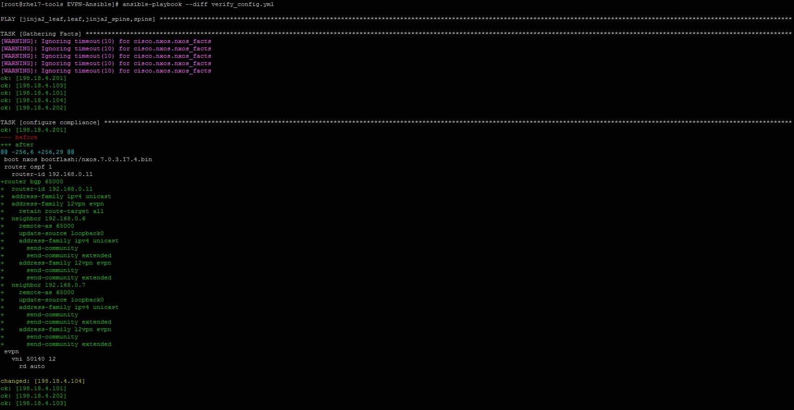
- On the Ansible node (in MTputty SSH session), run the command
curl -L https://packages.gitlab.com/install/repositories/runner/gitlab-runner/script.deb.sh | sudo bash
root@ubuntu:~/EVPN-Ansible# curl -L https://packages.gitlab.com/install/repositories/runner/gitlab-runner/script.deb.sh | sudo bash
Bwlow screenshot shows the execution of the command
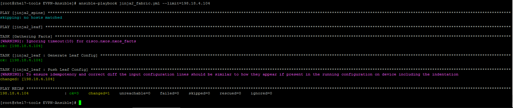
- On the Ansible node (in MTputty SSH session), run the command
apt-get install gitlab-runner
root@ubuntu:~/EVPN-Ansible# apt-get install gitlab-runner
Below screenshot shows the output of above command:

- On the Ansible server (via MTputty SSH session), run the command
gitlab-runner install -u rootas shown below below:
root@ubuntu:~/EVPN-Ansible# gitlab-runner install -u root
-
Below partial screenshot shows the output of above command:

Step 3: Version control playbooks
In this step, you will use Gitlab to set version control for the playbooks.
-
Open chrome browser and enter gitlab.com/users/sign_in in the address bar. sign in with Username: lab.ciscolive@gmail.com Password: C1sco12345 as shown below.
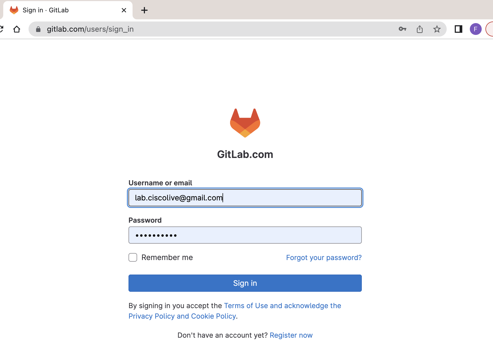
-
After sign in to lab.ciscolive gitlab account, click New project on the top right to build a new project.
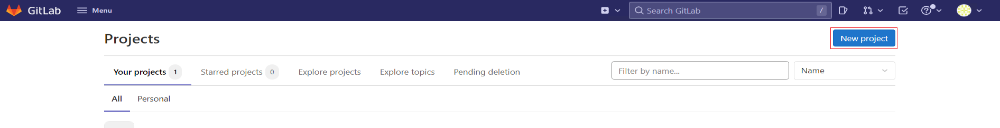
-
Select Create blank project and create new project with your assigned POD ID. The screenshot below uses POD 1 as example, find your assigned POD ID from table in task1.
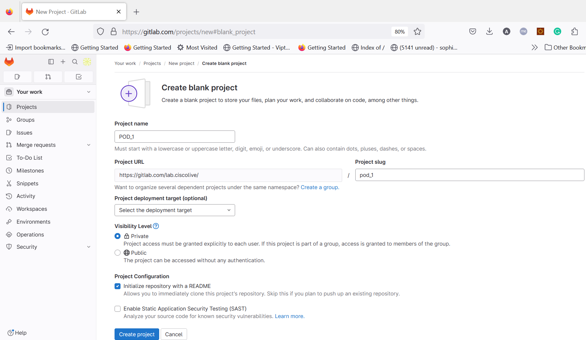
-
On the project page, copy the project url from Clone with HTTPS as shown below. The project url The project url will be used in next step. The project url looks like https://gitlab.com/lab.ciscolive/pod_#.git
The screenshot below uses POD 1 as example.

-
By default the main branch is protected branch, change it to unprotected in order to add and commit files from git command. Change the main branch to unprotected from project Settings - Repository - Protected branches - unprotect as shown in below screenshot.
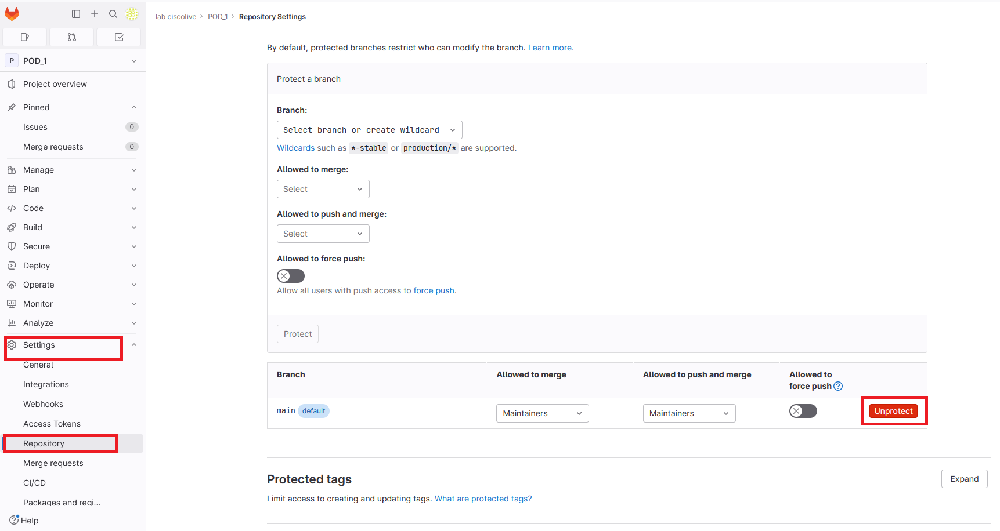
-
On the Ansible node (in MTputty SSH session), run the command
cd EVPN-Ansibleandgit initas shown below:
root@ubuntu:~# cd EVPN-Ansible/
root@ubuntu:~/EVPN-Ansible# git init
Initialized empty Git repository in /root/EVPN-Ansible/.git/
root@ubuntu:~/EVPN-Ansible#
Below screenshot shows the execution of the command
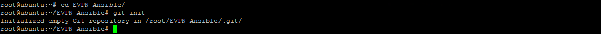
- On the Ansible node, run following commands to add playbooks to the project
git remote add origin https://gitlab.com/lab.ciscolive/pod_1.gitgit add .as shown below:
root@ubuntu:~/EVPN-Ansible#
root@ubuntu:~/EVPN-Ansible# git remote add origin https://gitlab.com/lab.ciscolive/pod_1.git
root@ubuntu:~/EVPN-Ansible# git add .
root@ubuntu:~/EVPN-Ansible#
- Commit and push all files to main branch with command
git checkout -b maingit commit -m "Initial commitgit push -f origin mainas shown Below: Use username:lab.ciscolive and password:C1sco12345 for gitlab access
root@ubuntu:~/EVPN-Ansible# git checkout -b main
Switched to a new branch 'main'
root@ubuntu:~/EVPN-Ansible# git commit -m "initial commit"
root@ubuntu:~/EVPN-Ansible# git push -f origin main
Username for 'https://gitlab.com': lab.ciscolive
Password for 'https://lab.ciscolive@gitlab.com':
Below screenshot shows partial outputs of the commands
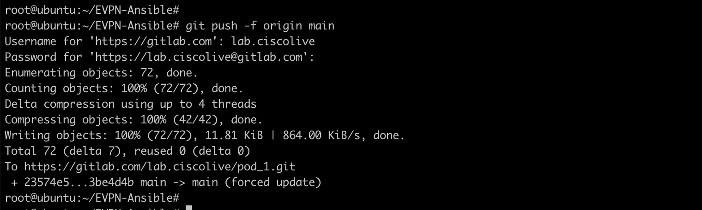
Step 4: Add CI pipeline file
In this step, you will create CI pepeline file for gitlab. Gitlab uses a special file named .gitlab-ci.yml for CI/CD configuration. The file needs to be placed in root of the repository. Inside the file, you will define - The stages you want run in the pipeline - The scripts you want run in each stage - The runner you want use for each script - How is the runner triggered for each script
Pipeline file can be added from gitlab UI using pipeline file editor, or from local and push to girlab repo using Git command. We will use atom to add pipeline file in this lab.
- Switch to "Atom", right click on the folder EVPN-Ansible and Click New File to create a new file named .gitlab-ci.yml
- In the .gitlab-ci.yml enter the contents shown below
stages:
- test
- staging
- production
verify:
stage: test
tags:
- EVPN
script:
- ansible-playbook jinja2_fabric.yml --check
rules:
- if: '$CI_PIPELINE_SOURCE == "push" && $CI_COMMIT_BRANCH != "main"'
staging:
stage: staging
tags:
- EVPN
script:
- ansible-playbook jinja2_fabric.yml
- ansible-playbook nxos_fabric.yml
- ansible-playbook verify_fabric.yml
artifacts:
paths:
- overlay.txt
- underlay.txt
rules:
- if: '$CI_PIPELINE_SOURCE == "push" && $CI_COMMIT_BRANCH != "main"'
deploy:
stage: production
tags:
- EVPN
script:
- ansible-playbook jinja2_fabric.yml
- ansible-playbook nxos_fabric.yml
rules:
- if: '$CI_PIPELINE_SOURCE == "merge_request_event"'
when: manual
Below screenshot shows the file after added above contents on Atom
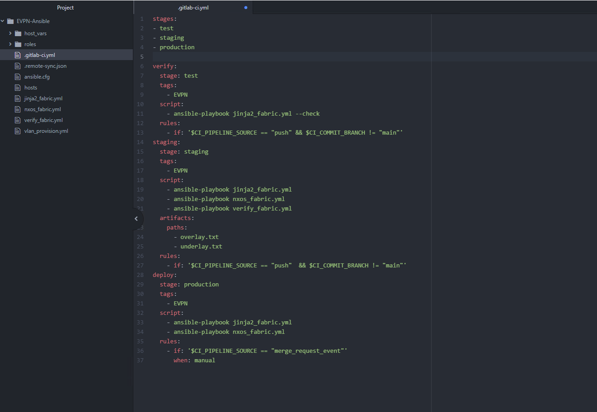
* From Atom, goto File - Save to push the new pipeline to Ansible node.Note, in the above pipeline file, you have configured - Three stages for pipeline with test, staging and production - In test stage, pipeline will do dyr-run for the ansible playbook using a git-runner with tag EVPN. This script will be triggered by change in branch. - In staging stage, pipeline will run playbooks to build EVPN fabric for new VNIs, also collrect show outputs files for manual verification. This scripts will be triggered after success of test stage. - In production stage, pipeline will run playbook to deploy EVPN fabric for new VNIs in production. This script will be triggered after merge to main branch with manual trigger.
- Switch to Ansible node (via MTPuTTY), run
git add .gitlab-ci.yml,git commit -m "add ci file",git push origin mainas shown Below: Use username:lab.ciscolive and password:C1sco12345 for gitlab access
root@ubuntu:~/EVPN-Ansible# git add .gitlab-ci.yml
root@ubuntu:~/EVPN-Ansible# git commit -m "add ci file"
root@ubuntu:~/EVPN-Ansible# git push origin main
Username for 'https://gitlab.com': lab.ciscolive
Password for 'https://lab.ciscolive@gitlab.com':
Below screenshot shows the outputs of the commands
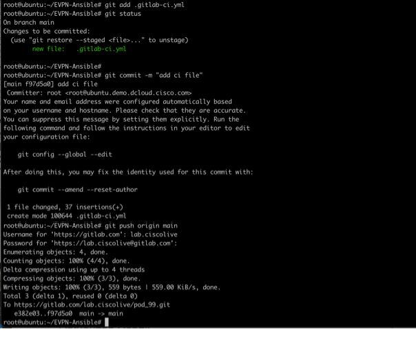
Step 5: Register local gitlab-runner
In this task, you will create local gitlab runner to run pipeline jobs. You will assign EVPN as tag of the runner and register it to your project.
- Switch to Chrome brower with gitlab project page, select Settings - CI/CD from navigation menu on the left and then Expand Runners setting as shown in below screenshot.
Screenshot below uses POD 1 as example, find your assigned POD ID from table in task1.
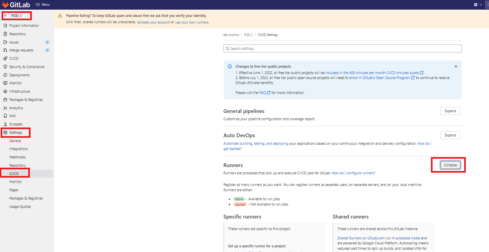
- Click the toggle switch under Shared runners to disable shared runners for this project. Note the regitration URL and registration token will be used on next step.
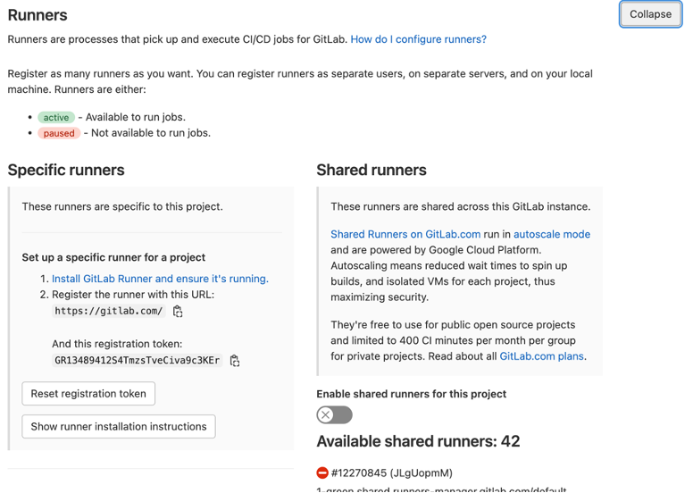
- On the Ansible node (in MTputty SSH session), run command
gitlab-runner registerand provide the runner registration info as shown below
Enter the GitLab instance URL: https://gitlab.com/
Enter the registration token: get registration token from previous step
Enter a description for the runner: enter without change
Enter tags for the runner (comma-separated): EVPN (case sensitive)
Enter optional maintenance note for the runner: enter without change
Enter an executor: / shell
Below screenshot shows the outputs of the commands
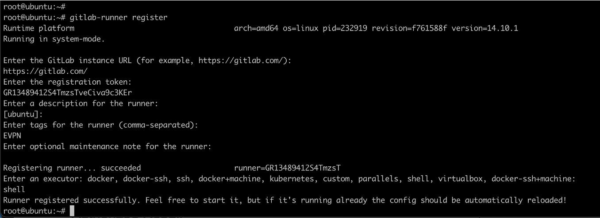
- On the Ansible node (in MTputty SSH session), run command
gitlab-runner startas shown below
root@ubuntu:~# gitlab-runner start
Runtime platform arch=amd64 os=linux pid=287872 revision=c6bb62f6 version=14.10.0
root@ubuntu:~#
Step 6: Add stage branch and add new VNIs
In this task, you will modify the variable file to add new networks on EVPN fabric. Instead of applying the change directly to production, you will use the gitlab pipeline to do test and staging first. Todo that, you will create new branch in your project and push the variable files to the new branch. The push will trigger gitlab-runner to execute scripts configured in pipleline file.
- Switch to "Atom", open "main.yml" file under roles - jinja2_leaf - vars. Enter following new VNI informtion under L2VNI as shown below
- { vlan_id: 200, vni: 50200, ip_add: 172.21.200.1, mask: 24, vlan_name: L2-VNI-200-Tenant1, mcast: 239.0.0.200 }
- { vlan_id: 201, vni: 50201, ip_add: 172.21.201.1, mask: 24, vlan_name: L2-VNI-201-Tenant1, mcast: 239.0.0.201 }
Below screenshot shows the file after added above contents on Atom
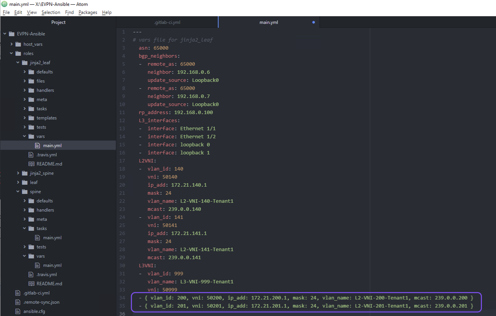
* From Atom, goto File - Save to push the new jinja2 varilabe file to Ansible node.- From "Atom", open "main.yml" file under roles - leaf - vars. Enter following new VNI informtion under L2VNI as shown below
- { vlan_id: 200, vni: 50200, ip_add: 172.21.200.1, mask: 24, vlan_name: L2-VNI-200-Tenant1, mcast: 239.0.0.200 }
- { vlan_id: 201, vni: 50201, ip_add: 172.21.201.1, mask: 24, vlan_name: L2-VNI-201-Tenant1, mcast: 239.0.0.201 }
Below screenshot shows the file after added above contents on Atom
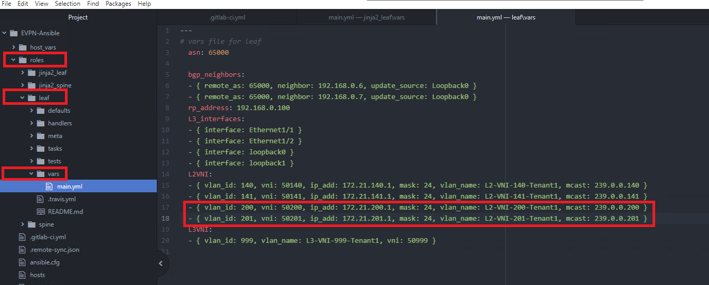
* From Atom, goto File - Save to push the new leaf varilabe file to Ansible node.- On the Ansible node (in MTputty SSH session), switch to EVPN-Ansible project folder
root@ubuntu:~# cd EVPN-Ansible/
- Run the following git commands to create new branch newvni, commit the updated variable files to that new branch and push to Gitlab project.
git branch -m newvni
git add .
git commit -m "newvni"
git push -u origin newvni
Use username:lab.ciscolive and password:C1sco12345 for gitlab access
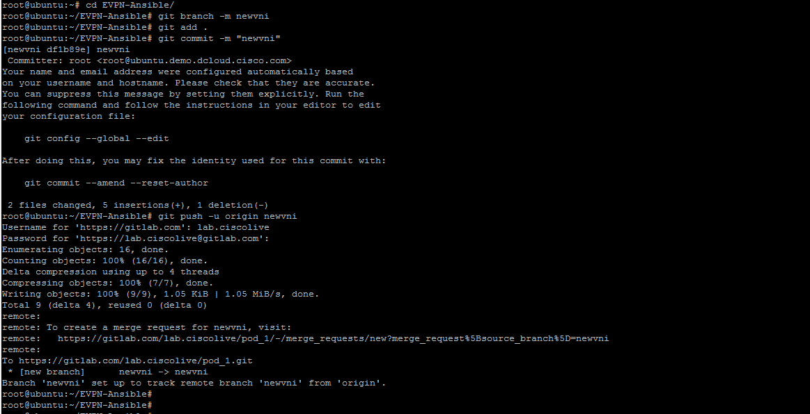
Step 7: Review pipeline testing and staging results
In this task, you will review the script results from pipeline. The git push command in previous task triggered pipeline test and staging stage.
- Switch to Chrome brower with gitlab project page, select CI/CD - Pipelines from navigation menu on the left.
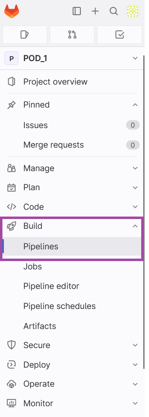
- Wait for the jobs finish, you can also access the runner console by clicking the pipeline stage under Stages as shown below
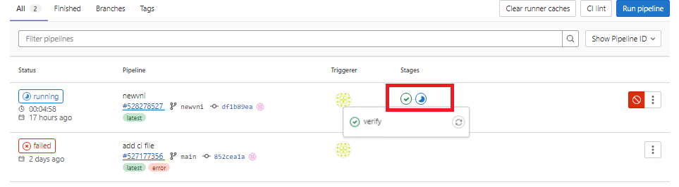
- After both pipeline stags are passed, you can verify the staging result from the stage artifacts. Click the ... on the right most of the pipeline and Download artifacts as shown below.
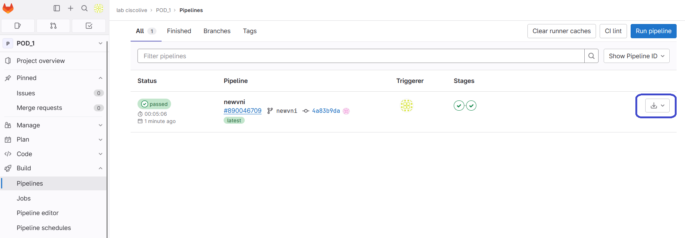
- Unzip the downloaded artifacts.zip, and you will see overlay.txt and underlay.txt which are the show outputs from the ansible playbook.
- Read the overlay show outputs and you can see new vni 50200 and 50201 are deployed on staging environment as shown below.
- - 'Codes: CP - Control Plane DP - Data Plane '
- ' UC - Unconfigured SA - Suppress ARP '
- ' SU - Suppress Unknown Unicast'
- ' '
- Interface VNI Multicast-group State Mode Type [BD/VRF] Flags
- '--------- -------- ----------------- ----- ---- ------------------ -----'
- 'nve1 50140 239.0.0.140 Up CP L2 [140] '
- 'nve1 50141 239.0.0.141 Up CP L2 [141] '
- 'nve1 50200 239.0.0.200 Up CP L2 [200] '
- 'nve1 50201 239.0.0.201 Up CP L2 [201] '
- nve1 50999 n/a Up CP L3 [Tenant-1]
- - ''
- - IP Route Table for VRF "Tenant-1"
- '''*'' denotes best ucast next-hop'
- '''**'' denotes best mcast next-hop'
- '''[x/y]'' denotes [preference/metric]'
- '''%<string>'' in via output denotes VRF <string>'
- ''
- '172.21.140.0/24, ubest/mbest: 1/0, attached'
- ' *via 172.21.140.1, Vlan140, [0/0], 17:56:06, direct'
- '172.21.140.1/32, ubest/mbest: 1/0, attached'
- ' *via 172.21.140.1, Vlan140, [0/0], 17:56:06, local'
- '172.21.141.0/24, ubest/mbest: 1/0, attached'
- ' *via 172.21.141.1, Vlan141, [0/0], 17:56:05, direct'
- '172.21.141.1/32, ubest/mbest: 1/0, attached'
- ' *via 172.21.141.1, Vlan141, [0/0], 17:56:05, local'
- '172.21.200.0/24, ubest/mbest: 1/0, attached'
- ' *via 172.21.200.1, Vlan200, [0/0], 17:56:04, direct'
- '172.21.200.1/32, ubest/mbest: 1/0, attached'
- ' *via 172.21.200.1, Vlan200, [0/0], 17:56:04, local'
- '172.21.201.0/24, ubest/mbest: 1/0, attached'
- ' *via 172.21.201.1, Vlan201, [0/0], 17:56:04, direct'
- '172.21.201.1/32, ubest/mbest: 1/0, attached'
- ' *via 172.21.201.1, Vlan201, [0/0], 17:56:04, local'
- - ''
- - 'Flags -(Rmac):Router MAC (Stt):Static (L):Local (R):Remote (V):vPC link '
- (Dup):Duplicate (Spl):Split (Rcv):Recv(D):Del Pending (S):Stale (C):Clear
- '(Ps):Peer Sync (Ro):Re-Originated '
- 'Topology Mac Address Prod Flags Seq No Host IP Next-Hops '
- '----------- -------------- ------ ---------- --------------- ---------------'
Step 8: Merge to main branch
After reviewing the test result from staging environment, you confirmed the new NVIs are deployed properly, you will merge the newvni branch to main branch and deploy the new VNIs on production environment. In this lab, we are using same inventory for staging and production environment for simplicy, and different inventory should be used in real world.
- Switch to Chrome brower with gitlab project page, select Merge requests from navigation menu on the left and select New merge request as shown below.
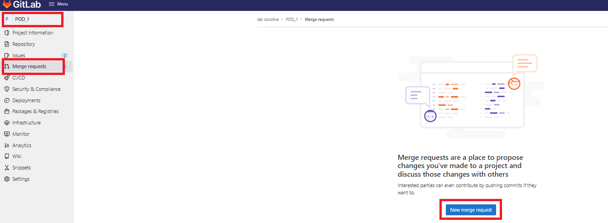
- Select newvni as source branch and main as target branch as shown in the screenshot below. Screenshot below uses POD 1 as example, find your assigned POD ID from table in task1.
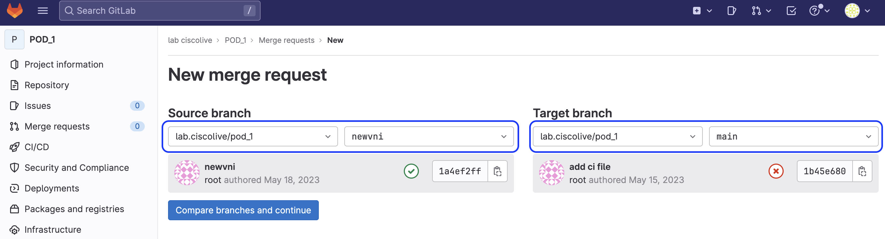
- Give a Title for the merge request, leave anything as default and click Create merge request
- On the merge request, you have option to Delete source branch after merge, and add merger commit message. After you have reviewed the merge request, click the Merge button as showen in the screenshot below.
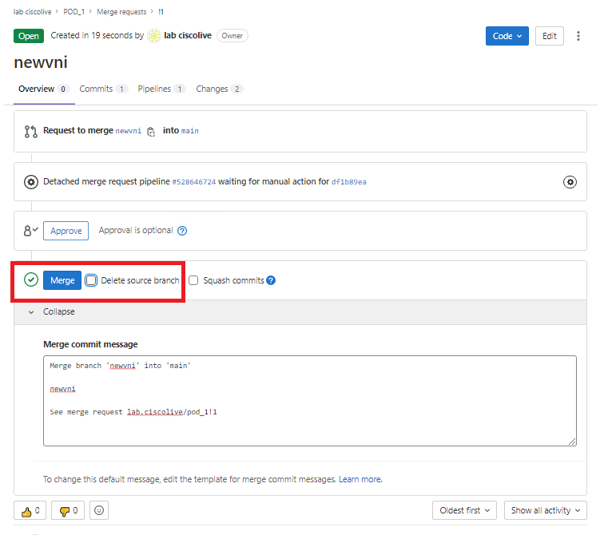
- Since the CI pipeline file uses manul for production deployment, the job for deploying production will not be triggered automatically. Instead, you will manually kickoff the production deployment job on pipeline.
- Switch to Chrome brower with gitlab project page, select CI/CD - Pipelines from navigation menu on the left.
-
Deploy the newvni on production enviroment by selecting deploy on the pipeline job from previous merger request as showen in the screenshot below.
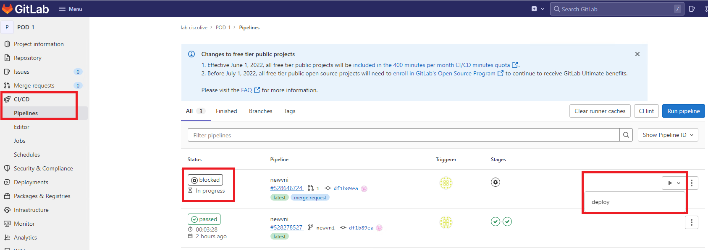
-
Wait for the job finish, you can also access the runner console by clicking the pipeline stage under Stages as shown below
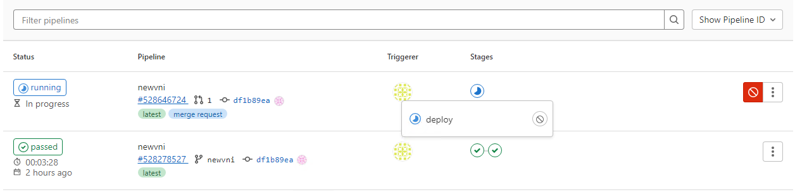